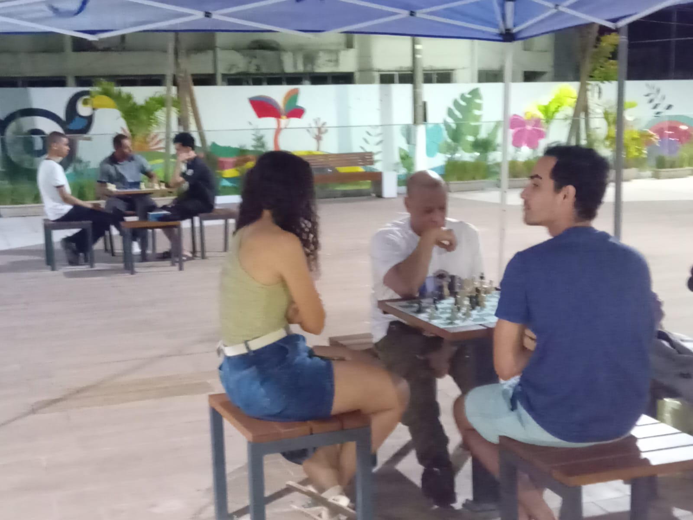
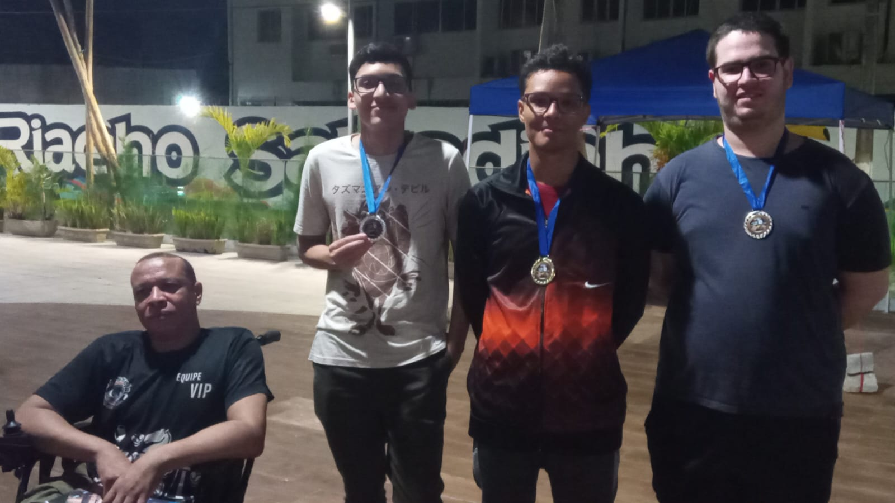
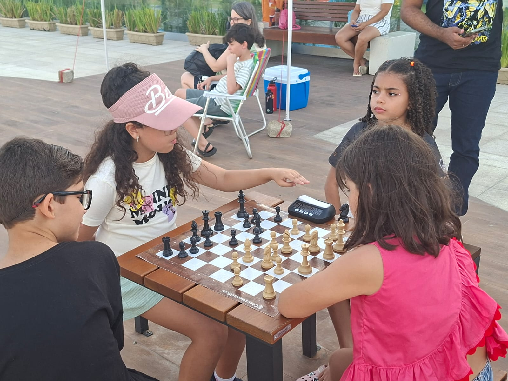
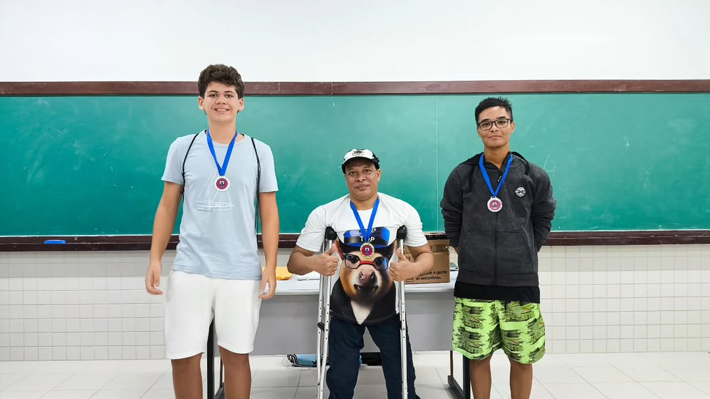
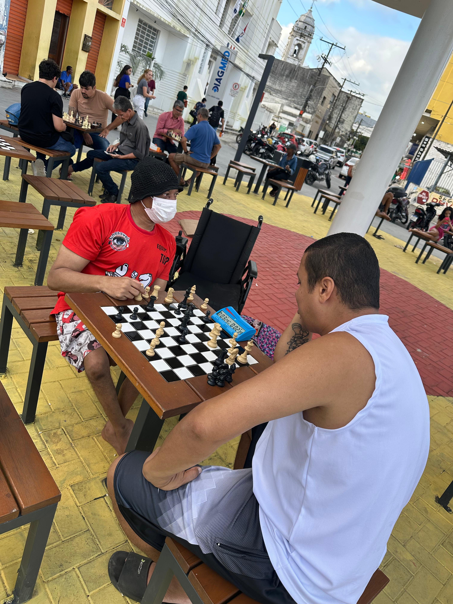

Acompanhe nossos eventos, aulas e a evolução dos nossos atletas através das nossas lentes.
Cada album conta cada capítulo de nosso projeto Xadrez na praça, de nossas conquistas e de nossos eventos. Escolha uma categoria abaixo para ver mais fotos:

Registros oficiais do nosso projeto focado em levar o xadrez para os espaços públicos.

Fotos exclusivas da primeira edição do nosso torneio na praça.

A emoção e os lances dos nossos jovens enxadristas na edição Kids.

Celebração das conquistas, pódios e premiações dos nossos atletas.

Galeria com os melhores momentos das ações realizadas na Praça Monte Pio.